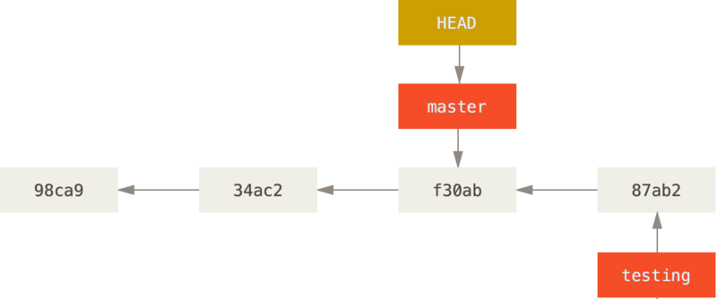
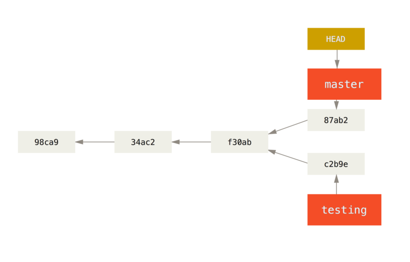
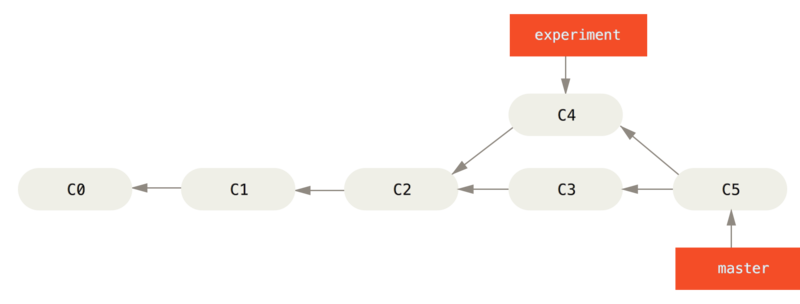

Commit often, perfect later, publish once
Warum git?
Etwas Historie


A completely ignorant, childish person with no manners.
8 Gründe
1. Git ist ein verteiltes Versionskontollsystem*
* es unterstützt die Arbeit der Entwickler


- git funktioniert offline
…und ist deshalb schnell - Die Veröffentlichung von Änderungen ist explizit
…und erlaubt deshalb Korrekturen - Die Mitarbeit ist Open Source ist einfacher geworden
…was auch für Unternehmen profitabel ist
2. Git basiert auf einem simplen Grundprinzip*
* das mathematisch beschrieben ist
Eine Änderung ist ein Commit
Historie ist eine Folge von Commits
Branches sind Zeiger auf einen Commit
Wir bauen uns einen Graphen

* einen gerichteten azyklischen Graphen
3. Branching (und Merging) ist einfach*
* auch ohne Administratoren
agross@FIRIEL /work/grossweber-website/ (master) $ git branch -a experimental/accessing-compiled-content experimental/progressive-jpeg experimental/webfont-search-button feature/ab-testing feature/geo * master upgrade/nsb5 remotes/origin/HEAD -> origin/master remotes/origin/feature/ab-testing remotes/origin/master
- Branches sind zunächst lokal
- Branches sind billig
- gits Mergealgorithmus wurde mithilfe des Linux Kernel-Source feinabgestimmt
4. Korrekturen* sind möglich
* jederzeit korrigieren zu können ist wunderbar
Wem kommt das bekannt vor?
Ich habe vergessen eine Datei zu committen!
Ich habe mich in der Commit Message vertippt!
Der letzte Commit war doch keine so gute Idee!
Jetzt habe ich 3 Anläufe für den Bugfix benötigt!
All das (und mehr) lässt sich korrigieren!*
* git besitzt unzählige Sicherheitsvorkehrungen um bspw. Korrekturen mehrfach durchführen zu können
...um eine Geschichte zu erzählen
- Geschichten kürzen ab
- Geschichten beschönigen tatsächliche Ereignisse
- Geschichten sind verständlich
5. git schreibt keinen Workflow vor*
* wie wäre es nur das Beste für sich zu wählen
Branches zur Isolation

git-flow

Serverseitige Repositories*
* warum eins wenn man auch mehr haben kann
Zentralisiert*
* vermutlich das was Sie jetzt im Einsatz haben

Integration Manager

Benevolent Dictator

6. git funktioniert überall*
* Windows, Linux, Mac, Konsole, IDE
7. git ist ein Skalpell*
* mit dem man sich nicht schneiden kann
Wie wäre es die Korrekutur der Reiskostenabrechnung separat zu releasen?
$ git diff -- dokumentation.txt ... Foobar HR Module in der aktuellen Version von Foobar HR: * Personalabrechnung - * Reiskostenabrechnung + * Reisekostenabrechnung * Zeitwirtschaft * Bewerbermanagement + * Zielvereinbarungen + * digitale Personalakte
8. git ist sehr gut dokumentiert
Von Experten geschrieben
git-rebase - Forward-port local commits to the updated upstream head
Optionen, Optionen...
Git schneidet bei Source Control so gut ab wie ein scharfes japanisches Messer bei einem Steak.
Wir denken jetzt mehr in Git als in SVN.
Hallo, git
$ git <verb>
$ git help <verb> $ git <verb> --help
$ git init Initialized empty Git repository in /scratch/.git/ $ echo hello, world > hello.txt $ git add hello.txt $ git commit -m "my first commit!" [master (root-commit) ad9a291] my first commit! 1 file changed, 1 insertion(+) create mode 100644 hello.txt
$ git log --patch commit ad9a291416165bb95a541321a7acf9cef9731c1d Author: Alexander Groß <agross@therightstuff.de> Date: Sat Feb 6 12:41:24 2010 +0100 my first commit! diff --git a/hello.txt b/hello.txt new file mode 100644 index 0000000..4b5fa63 --- /dev/null +++ b/hello.txt @@ -0,0 +1 @@ +hello, world
Branching
Einfache Historie

HEAD ist ein spezieller Zeiger
Einen Branch erzeugen
$ git branch testing <where>(
<where> ist standardmäßig der Commit auf den HEAD zeigt)

Den Branch wechseln
$ git checkout testing

Einen Commit auf testing erzeugen
$ git commit -am "work on testing"

Zurück auf master
$ git checkout master
Einen Commit auf master erzeugen
$ git commit -am "work on master"
Integration
Divergente Historie

Integration mit git merge
$ git checkout master
$ git merge experiment

C5 bringt beide Branches zusammen.
Linearisierung mit git rebase
$ git checkout experiment
$ git rebase master
 Eine Kopie von
Eine Kopie von C4 wird auf master als C4' angewendet.
Noch mehr Möglichkeiten
-
git cherry-pick <SHA>
Einen Commit direkt anwenden. -
git merge --squash topic
Zusammenführen aller Commits eines Branches zu einem Commit auf dem aktuellen Branch. -
git merge feature/login bugfix/42 experiment/foo
Mehrere Branches mit einem Merge-Commit integrieren. - …und noch mehr ;-)
Vielen Dank! :-)
grossweber.com/git